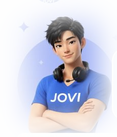

Olá! 👋
Sou o Kai, seu assistente da câmera. Transformo sua câmera num hub inteligente, pronto para facilitar seu dia!
Escolher assistente
Kai
Assistente de produtividade da câmera
Mia
Assistente criativa de fotografia
Protótipo de front-end — JOVI Hub de Assistentes · HTML, Tailwind CSS & JavaScript